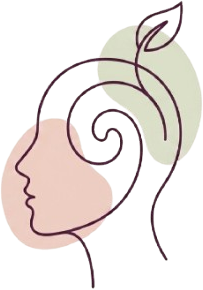
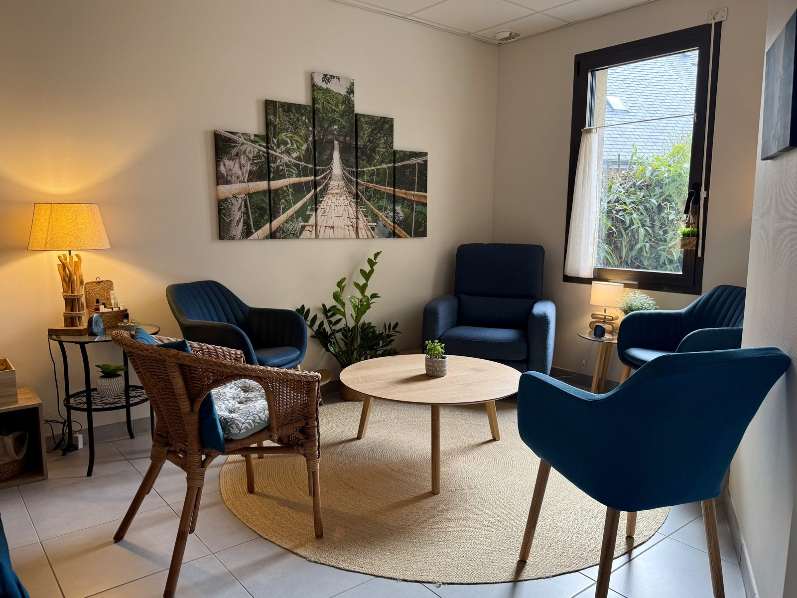

Raphaëlle Beaufils, psychologue clinicienne à Verrières‑en‑Anjou
- Formée à l'intervention systémique
- Instructrice MBCT · pleine conscience
 Formée à l'intervention systémique
Formée à l'intervention systémiquePsychologue clinicienne depuis plus de 20 ans, j'accompagne les personnes confrontées à des difficultés personnelles, relationnelles ou familiales, lorsqu'elles traversent une période difficile et qu'elles souhaitent retrouver un meilleur équilibre de vie.
Je vous accueille dans un espace de parole et d'écoute, de réflexion et de soutien, pour vous aider à mieux comprendre ce que vous vivez et à mobiliser vos ressources pour avancer.
Mes accompagnements
Mon approche s'appuie sur une psychologie intégrative combinant des approches variées — outils psychanalytiques, approche systémique, thérapie cognitive basée sur la pleine conscience — pour une prise en soin globale et personnalisée, adaptée à vos besoins spécifiques.

Accompagnement individuel
Enfant, adolescent, adulte. Un temps qui vous est entièrement consacré, pour mieux vous comprendre et dépasser une difficulté.
En savoir plus →
Thérapie de couple
Retrouver le dialogue, sortir des conflits répétitifs et mieux se comprendre à deux.
En savoir plus →Thérapie familiale
Restaurer l'équilibre familial et permettre à chacun de retrouver sa place.
En savoir plus →Programme MBCT
Prévenir la rechute dépressive grâce à la pleine conscience. Programme de groupe en 8 séances.
Découvrir le programme →
Un espace de parole, d'écoute et de soutien
Je considère chaque personne dans sa globalité, en tenant compte de trois dimensions internes — psychique, émotionnelle, corporelle — et de trois dimensions externes — sociale, familiale et spirituelle.
Formée à l'intervention systémique et à la thérapie cognitive basée sur la pleine conscience, j'accompagne les individus, les couples et les familles dans une écoute bienveillante et respectueuse du rythme de chacun.
Prendre rendez-vous
Le cabinet se situe à la Maison de la santé de Pellouailles-les-Vignes (Verrières-en-Anjou), à 15 minutes d'Angers. Consultations sur rendez-vous.
Informations pratiques & contact